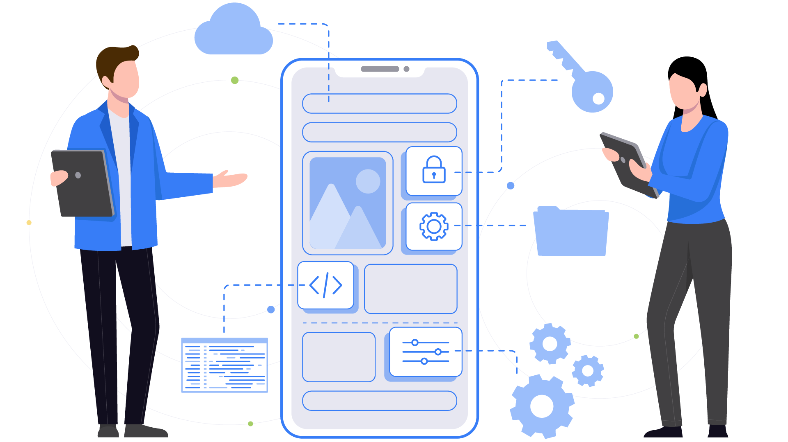
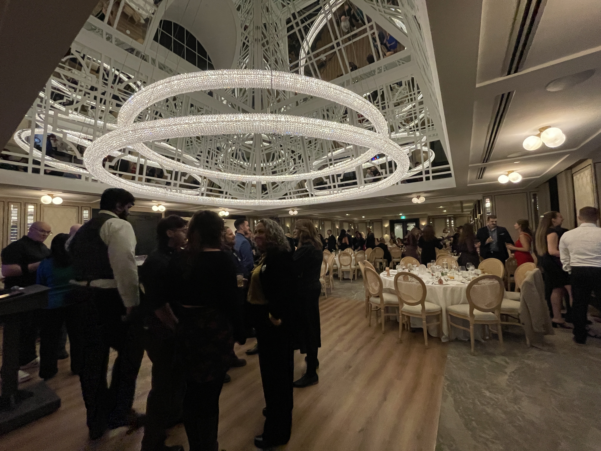
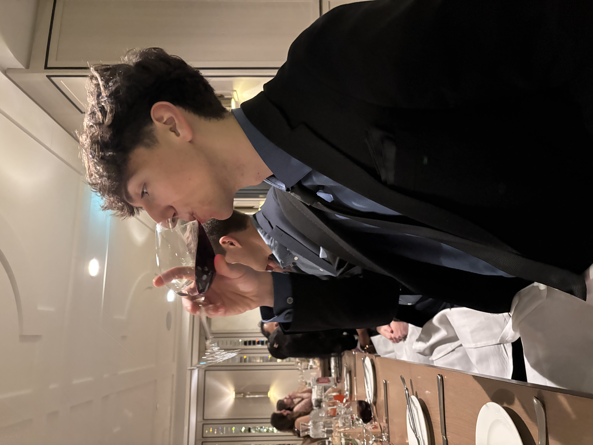

Between the months of August and December of 2025, I spent my time at Connect Tech Inc. as a Web Application Developer. During this time, I learned many things, and I hope that by the end of this article, you can get a glimpse into what I did during my time here and the things I learnt.
Connect Tech Inc: Who Are They?
Connect Tech is a hardware design and manufacturing company that specializes in embedded computing solutions, with a heavy emphasis on solutions involving AI. They design and manufacture all of their products in-house! Not only that, but they also program all of their drivers in-house and can create custom products for customer-specific needs. In short, they are an all-in-one stop for embedded motherboards! And it's all done locally, right in Guelph.
Connect Tech is a pretty awesome company, despite being relatively unknown within its own city. Connect Tech is a quickly emerging and recognized leader in the embedded computing world. They are so well recognized that they are even an elite partner of Nvidia (The biggest company in the world, in case you didn't know), and a subsidiary of Heico! With global outreach and products powering the most cutting-edge embedded AI applications, Connect Tech is a company with an incredibly bright future, and I was just lucky enough to be a part of it.
My Goals
Coming into this position, I had a few goals in mind that I knew I wanted to improve upon while at Connect Tech. These goals were:
- Improve my Speaking/Presenting Skills
- Become an Efficient Problem Solver
- Improve my Web Development Skills
Improve my Speaking/Presenting Skills
Entering this position, I knew that this was the one goal I wanted to ensure that I improved on the most.
This is an extremely overlooked and undervalued skill to have. Countless people have great ideas that could take off,
but fail to present them in a way that makes them appealing to potential customers. I knew that this was a problem area for me,
not only due to a lack of experience, but also a lack of confidence in my ability to speak. Luckily, I had a very supportive supervisor
who gave me many opportunities to improve upon this skill, going as far as providing a product pitch to the president of the company!
During my time at Connect Tech, my primary task, which took up most of my time, was developing a ticketing system for the IT department
to use to better manage the workload that they would receive. While this project grew to proportions I didn't expect, becoming
a company-wide tool (more on that later!), it gave me the chance to present my work in front of the most important people in
the company.
To launch this project, I had to receive approval for my project from the Chief Hardware Officer, the Chief Financial Officer, and
the President of the company. This led me to go through 3 demo rounds of my project to each of these people. What a perfect opportunity it
was for me to be able to work on my presenting skills. Each presentation went great, and my project got completely approved by each of
the people. After each presentation, I spoke with my supervisor and received feedback on what I did well and what could be
improved for next time. I believe that this goal was the one that I improved upon the most. Speaking to the highest-ranking people
at the company and selling them on my project was the best training, and it led to me gaining confidence in my abilities to present my ideas and
projects to various people.
Improving this skill will benefit the rest of my life, both inside and outside the workplace. The ability to clearly communicate
the ideas you have and how they are of value to others is something that I will be doing forever, and I am excited to use what
I learned in the future.
Become an Efficient Problem Solver
This goal, in my eyes, is the foundation of all software development, and generally being a professional in anything. Without the ability to efficiently reason and solve complex problems, you will not be able to get the results that you seek in your work. This is why I wanted to ensure I improved upon this skill. I knew I had the chance to work on problems that I won't encounter in school, and it would be a complete waste not try new methodologies for problem solving, and figure out what works best for me.
Throughout my work term, I was lucky enough to be given a wide variety of tasks, ranging from complex web programming to developing desktop apps, and some more mundane things like fixing printers. This gave me the perfect opportunity to try and experiment with my methods of problem-solving that I came up with. I focused on 3 main methods of problem-solving over the term.
- Just Going For It
- Planning with a Pen and Paper
- Make Something Work First
Just Going For It
This method is the simplest one, and unsurprisingly the most inefficient. Essentially, I would just jump straight in and work through the problems as I encounter them. Unsurprisingly, this worked out very poorly, and I mostly just created more issues for myself in the long run, and ended up changing most of the work I did at a later time when I tried this.
Planning with a Pen and Paper
This method involved much more planning than the previous one. I took my time before jumping straight into the code, and wrote down the issue I had, how I was going to create the solution for it, and the considerations that I needed to take into account to create an efficient solution. This method was much, much better. Not only did this allow me to get my thoughts in order and notice edge cases before running into them in the code, but it also allowed me to properly present my thoughts for my solutions to my supervisor, which allowed me to discuss if my solution was efficient or not, and if there were any oversights in my thinking. This method was the best for learning how to think algorithmically, but there was a drawback to it. Oftentimes, I would find that there would be certain situations or conflicts that I didn't see during my planning, which caused my initial plan to fall apart, and forced me to move in a different direction. This was the one primary flaw that I found with the strategy, but it was definitely better than just going for it.
Make Something Work First
This method is basically a combination of the last 2. I would take some time to plan out how I would go about solving the issue, but I wouldn't try to understand each edge case and catch all the little errors that would arise when planning. This method is closest to a testing-first methodology, in which I would develop a solution for the use cases that I had in mind first, make sure that it worked perfectly, and then iterate over my solution, improving it to handle any issues that I found while creating that first solution, and ensuring that all cases were handled properly by the time I was finished. For me, this was easily the most efficient and best way to solve problems. The first method had a great lack of direction, which caused issues for me, and the second caused me to have a narrow vision towards the problem, making it difficult to come up with a better solution, since I was so set on the solution that I planned out. This method was the perfect mix; it gave me enough planning to not approach a problem blind, but allowed me to iterate over my solution time and time again to create the best possible solution that I could create. By the end of my work term, this was the method that I followed for all of my problems, and it made my work much, much better.
Having the opportunity to experiment with how I like to approach problem-solving in an actual working environment was an extremely beneficial part of this work term. It gave me the chance to find out what works best for me, and now I have a basis for how I can approach all future problems, and I will be much more efficient in all of my work, and be a much better problem solver both professionally and in my personal life.
Improve my Web Development Skills
As a Web Developer Co-op, it's only natural that I would want to improve my web development skills! I can safely say that over this co-op, I wrote more code for web applications than I ever have before, and it was great. It exposed me to countless issues and new things that I never knew before, and gave me the chance to solve these issues myself. I have found that I have become much more knowledgeable about not just web development, but how the internet works as a whole. All of the projects that I was creating were written in PHP. PHP is a somewhat outdated language in the web development world, but it is still widely used and can solve all of the issues that modern languages can. I came to appreciate the simplicity of PHP, since it has much less abstraction in what it can do, which forced me to become much more familiar with HTTP/HTTPS, and how machines communicate over the internet. Did it make the programming experience more difficult? Absolutely, but it was a welcome challenge, since this is information that is best learned by experimenting with it.
With all of the coding I did in PHP, I can safely say I became a proficient PHP developer, using it in both a procedural and Object-Oriented way, and using it for complex backend logic involving databases such as MySQL and processing files on servers, along with code generation for the frontend of the websites I was working on. PHP was not the only thing I became much better at; I got the opportunity to work with various other web technologies. I was working extensively with HTML and CSS, and I became much better at them. CSS was once a weak point of mine, and I despised having to write it; however, now that my understanding of it has grown, it's a bit more bearable. I also learned much more about HTML, such as the vast amounts of different tags that you often don't think of, the various attributes that can be given to those tags to change their behaviour, and how forms interact with the backend to process information from the user. To complete the trinity of web development, I obviously spent a good amount of time working with JavaScript. I became much more comfortable with JavaScript over the work term, coming to understand much more about the language and some of its more complex features, such as promises and async await. I was also introduced to JQuery, which is a JavaScript library that allows you to simplify JavaScript code in a much more efficient and less verbose way. While working with these technologies was great, I was hoping to get the opportunity to work with some more modern technologies, such as React or Angular, and a more modern backend language, such as JavaScript or Java. However, I learned a lot regardless of what I was hoping to work with, and that is what is most important to me.
After working with all of these technologies for a few months, I can comfortably say that I have become a much better web developer, learning the core technologies and how the internet works to communicate with devices. Overall, I believe I accomplished all of my learning goals and even learned much more beyond what I was hoping to just from my learning goals.
What I Did On The Job
Over the course of this Co-op, I had a very strange assortment of tasks to take on, which was a great thing, as I got exposure to various things beyond just web development. My position as a web developer was under the IT umbrella, so my supervisor, Mark, was actually the lead IT Analyst for Connect Tech. This meant that when I didn't have many tasks at the time, I got to undertake some tasks in the IT area, rather than the development side of things. Some of the things I did that were related to IT were some standard administration tasks, like updating machines with new antivirus software, preparing new machines for new employees, and ensuring they have all the software and permissions they need for their job.

Most of my work was working to develop websites, though. Specifically, the internal sites and applications around which the company is built. For the first month or so, I spent most of my time working on the company's DDCS system, which was the central web application that was used to track all clients, requests, and projects that were underway in the company. I have to say, at first, it was quite intimidating knowing that I was playing around with the systems that drove the company. I quickly got over this fact, however, and began making some simple changes that people were requesting. I also spent some time working on simple desktop applications that were also made in-house. They were generally simple applications for creating labels, so I would be tasked with creating and updating the labels that were present in this app. I also made a PDF comparison tool for the engineering department, which they were very grateful for, along with an Excel parsing application that would pull relevant information from a large list of BOM (Bill of Materials) lists, for the manufacturing department, which helped save a large amount of time for the heads of manufacturing.
Around the start of my second month, I began the biggest project I was given, and the main reason why I was hired. The IT department was looking to get a ticketing system to better handle the requests that they would receive. However, they were not looking to pay a monthly fee for such a service and wanted to develop an in-house system. This is where I came in; it was my job to create this ticketing system. I was given full control over the project and had to develop it to meet the needs of the IT department. Since I was given full control over the project, this meant I was allowed to show what I could do, and I ensured that I made a great product. Over the rest of my co-op, most of my time was spent working on this project, creating a full ticketing system. The technologies I used were once again quite simple, since they wanted to keep the technology stack of the company simple and not change it much. I was once again using PHP as the core of the project (which, at this point, wasn't a big deal; I got pretty good). This project was to be hosted fully onsite, so I configured an Apache web server to host my site, and utilized MySQL as the database with HTML, CSS, and JavaScript driving the frontend, with PHP on the backend. This was a great opportunity, as it was a full-stack project utilizing various technologies. Development of this project went smoothly, and as I mentioned earlier, I got the chance to present this project in front of the top people of the company.
It began with a presentation to the Lead Mechanical Engineer, Matt. This presentation was to show the first iteration of the project and how its basic functionality worked. This presentation went very well, and he was on board. Although he did give some suggestions for features that would be useful for the mechanical engineers. This was the beginning of the spread of my system. Next in line for presentations was the Head of HR and CFO, Manisha. This presentation once again went very smoothly, and since it was about a month after presenting to Matt, the project was beginning to take shape into the final product. Manisha gave her approval, and I went on to present to the President of the company, Patrick Dietrich, who, funnily enough, started at Connect Tech as an engineering co-op student from the University of Guelph. I presented it to him, and he loved it, saying, "I was expecting something half-baked, but this is really good!" Hearing that from the President of the company felt pretty good, and was a great reflection of how I've grown over the course of the workterm.
With all approval granted, I was free to open up my project to the entire company, of over 100 people. This was a great accomplishment for me, as many co-op projects don't get opened to the company or clients, depending on what they were working on. So knowing that I created something all on my own that went out to the entire company was a great accomplishment.
This ticketing system was the biggest project, and my biggest success at the company. Overall, I can say that many of the skills I was using on the job were somewhat learned in school. Web development was not taught at all in school, and this being the primary skill I was using, I had to teach myself a bit as I went along. It proved that my self-studying was proving to have a positive effect on me. I did learn about utilizing databases slightly in school, but I believe that the best thing that school taught me to prepare me for this job was how to create clean and concise solutions, utilizing efficient algorithms, and how to think algorithmically. This allowed me to create the best solution I could for the problems I worked on.
Conclusion
Overall, my work term proved to be unbelievably beneficial for me. I accomplished my learning goals of becoming a better speaker, becoming a better problem solver, and improving my web development skills. I got the chance to work on impactful projects that benefitted the entire company, and even saw it go live. I think that the skills developed here will prove invaluable in my next position. I got the chance to do good work at a great company, with great people, and I am grateful for the chance I got to prove myself.
I also got to go to the company christmas party! It gave me a great excuse to wear a suit for once.


I would like to thank Mark Lesniak and Matt Ferraro; they were my immediate supervisors, and I spent most of my time speaking and working with them (especially Mark!). I learned a lot being with them, and made many great memories while on my co-op. I would also like to acknowledge the Connect Tech free soda fridge, just because It was awesome.